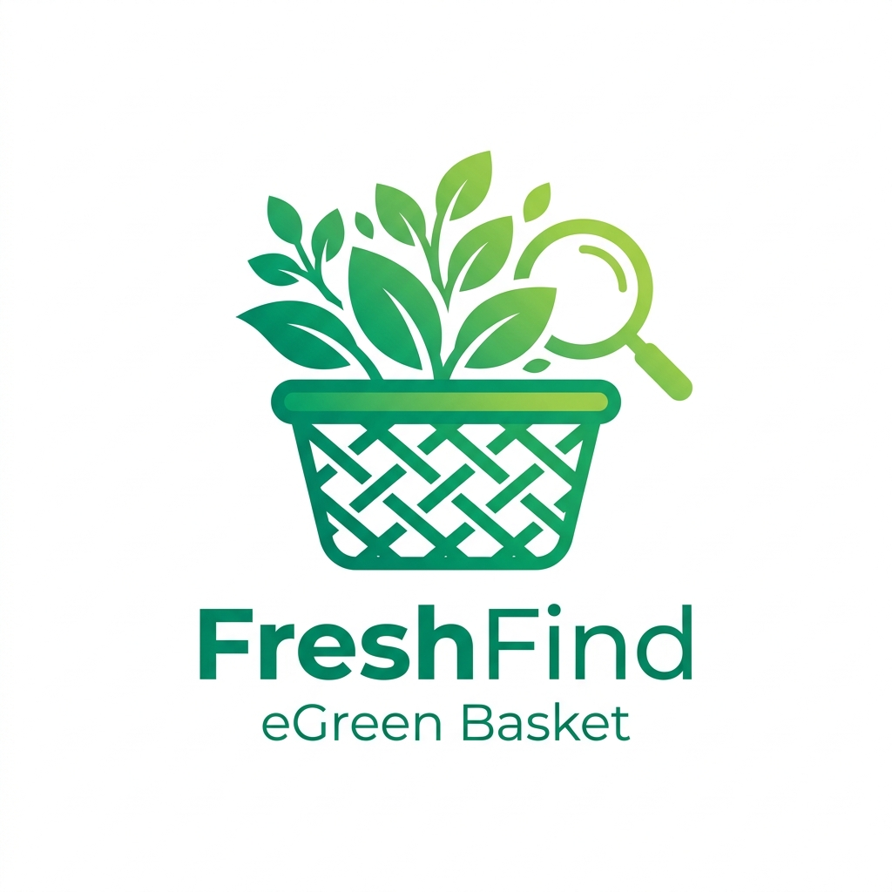

What Drives FreshFind
We are creating a sustainable bridge between urban consumers and local agriculture.
Our Mission
To empower local farmers by giving them greater visibility, while offering consumers accurate, real-time access to nearby markets, operating schedules, and harvest guides.
Our Vision
A thriving, decentralized food network where seasonal eating is celebrated, food miles are significantly minimized, and community well-being is prioritized.
Community First
Supporting independent farmers directly keeps agricultural traditions alive, ensures fair wages, and strengthens our local economic resilience.
Why Choose Local & Seasonal?
Buying from local farmers markets transforms your nutrition, environment, and community.
Peak Freshness & Taste
Produce picked at peak ripeness retains significantly more vitamins, antioxidants, and vibrant natural flavors than long-transported goods.
Reduced Food Miles
Short transport distances mean substantially less fuel consumption, minimal plastic packaging, and reduced greenhouse gas emissions.
Seasonal Variety
Eating with the natural seasons introduces biological diversity into your diet, synchronizing your nutrition with what the land naturally yields.
The eGreen Basket Story
Finding accurate information about local pop-up markets, community bachat bazaars, and organic vegetable hubs in Karachi has historically been reliant on word of mouth. Many shoppers didn't know which days markets were open or what produce was in season.
We developed FreshFind as a lightweight, lightning-fast digital platform that brings market locations, interactive mapping, live opening hours, and seasonal guides directly into the palm of your hand.
Verified market coordinates, operating days, and typical produce lists.
Fast browser experience without mandatory app downloads or registrations.

Fresh All Along
From leafy spinach and crisp cucumbers to golden summer mangoes, FreshFind is your companion in celebrating fresh, regional eating every single day of the week.
● Supporting 6+ neighborhood hubs